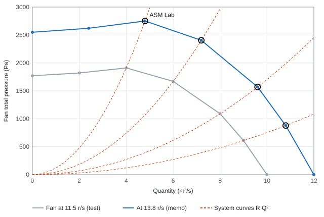
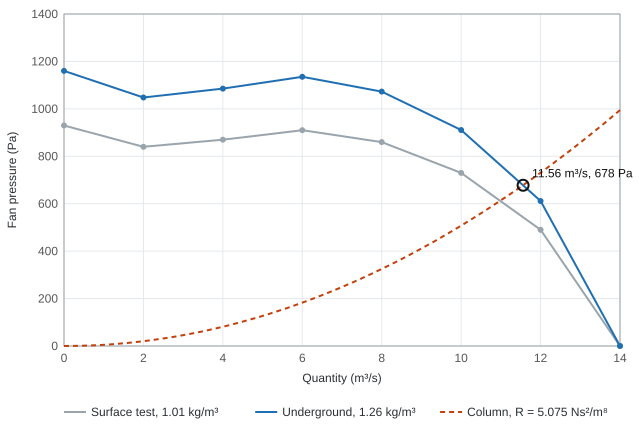
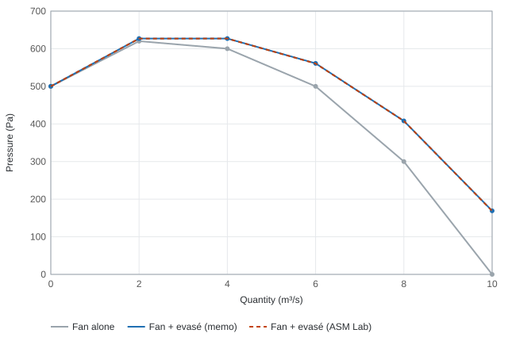

Worked examples: fans
The questions come from the MINN3019A mine ventilation course (tutorials, class calculations, self-study problems and lecture slides). Each one is set out as the question, the hand solution as in the memo, and then the same question answered with ASM Lab, with the difference from the memo. Memo values read off psychrometric charts carry the chart's reading accuracy, about 0.3 kJ/kg on sigma heat and 0.2 °C on a temperature, so differences of that size are reading differences, not errors.
Main fan duty for a mine¶
Tutorial 4.
The downcast shaft (1–2) is 6 m in diameter with an air velocity of 11 m/s and an air density of 1.05 kg/m³. The upcast (7–10) is 5.0 m in diameter. The air splits at 3 into two equal routes, 3–4–5–6 and 3–8–9–6, which join at 6. Ignore the resistance of the mining areas (4–5 and 8–9), compressed air and leakage. The air density in the fan drift is 1.02 kg/m³. Calculate (a) the air volume at the main fans and (b) the pressure rating of the main fans.
Hand solution¶
Every resistance underground is first corrected to the fan-drift density (R × 1.02 / ρ_local). The corrected values are 1–2: 0.00486, 2–3: 0.03709, 3–4 and 3–8: 0.04098, 5–6 and 9–6: 0.03778, 6–7: 0.00297 and 7–10: 0 Ns²/m⁸.
The mass flow in the downcast is carried to the fan drift:
With ASM Lab¶
Task: Solve the mine for its fan duty
- Draw the ten nodes and the airways and give each airway its corrected resistance (Resistance override in Inspect).
- Put the main fan on 7–10 and set it to Fixed quantity, 320.2 m³/s.
- Press F5. The fan reports the pressure it needs, 6 621 Pa, and each route carries 162.5 m³/s.
| Quantity | Memo | ASM Lab | Error |
|---|---|---|---|
| Air volume at the fan (m³/s) | 320.2 | 320.2 | 0.01 % |
| Fan pressure (Pa) | 6 624 | 6 621 | 0.05 % |
The fan laws: changing the speed¶
Lecture slides, fan graphs with density and speed.
A fan tested at 11.5 r/s and 1.2 kg/m³ gives the curve below. Re-plot the pressure and power curves at 13.8 r/s.
| Q (m³/s) | P (Pa) | Power (kW) |
|---|---|---|
| 0 | 1 770 | 8.7 |
| 2 | 1 820 | 12.3 |
| 4 | 1 910 | 15.0 |
| 6 | 1 670 | 16.5 |
| 8 | 1 090 | 16.0 |
| 9 | 610 | 15.0 |
| 10 | 0 | 13.0 |
Hand solution¶
At a constant density the quantity varies with the speed, the pressure with its square and the power with its cube; the efficiency stays the same at corresponding points:
So 4 m³/s at 1 910 Pa and 15 kW becomes 4.8 m³/s at 2 750.4 Pa and 25.92 kW, and so on down the table.
With ASM Lab¶
Task: Run the fan at a new speed
- Enter the 11.5 r/s curve as the fan's points with a reference speed of 11.5 r/s, and set the operating speed to 13.8 r/s.
- To check a point of the new curve, give the system the resistance that passes through it (R = P / Q²) and solve. The fan settles exactly on the memo's re-plotted point.

| Quantity | Memo | ASM Lab | Error |
|---|---|---|---|
| Q at the 4.8 m³/s point (m³/s) | 4.80 | 4.80 | 0.00 % |
| P at the 4.8 m³/s point (Pa) | 2 750.4 | 2 750.4 | 0.00 % |
| Power at the 4.8 m³/s point (kW) | 25.92 | 25.92 | 0.00 % |
| Q at the 7.2 m³/s point (m³/s) | 7.20 | 7.20 | 0.00 % |
| P at the 7.2 m³/s point (Pa) | 2 404.8 | 2 404.8 | 0.00 % |
| Power at the 7.2 m³/s point (kW) | 28.51 | 28.51 | 0.00 % |
| Q at the 9.6 m³/s point (m³/s) | 9.60 | 9.60 | 0.00 % |
| P at the 9.6 m³/s point (Pa) | 1 569.6 | 1 569.6 | 0.00 % |
| Power at the 9.6 m³/s point (kW) | 27.65 | 27.65 | 0.00 % |
| Q at the 10.8 m³/s point (m³/s) | 10.80 | 10.80 | 0.00 % |
| P at the 10.8 m³/s point (Pa) | 878.4 | 878.4 | 0.00 % |
| Power at the 10.8 m³/s point (kW) | 25.92 | 25.92 | 0.00 % |
A fan tested on surface and used underground¶
Lecture slides, density change tutorial.
A direct-driven axial fan is tested on surface at an air density of 1.01 kg/m³. It is to be used underground where the density is 1.26 kg/m³, on a 760 mm ventilation column 54 m long with a k-factor of 0.0035 Ns²/m⁴. Find the operating point, input power and efficiency.
| Q (m³/s) | P (Pa) | Input power (kW) |
|---|---|---|
| 0 | 930 | 3.6 |
| 2 | 840 | 4.6 |
| 4 | 870 | 5.9 |
| 6 | 910 | 7.8 |
| 8 | 860 | 10.0 |
| 10 | 730 | 12.4 |
| 12 | 490 | 14.7 |
| 14 | 0 | 14.6 |
Hand solution¶
At a constant speed the quantity stays, and the pressure and power scale with the density:
The column resistance (k taken at 1.2 kg/m³ and corrected to 1.26 kg/m³):
The operating point is where R Q² meets the new fan curve, between 10 and 12 m³/s. Interpolating along the curve:
With ASM Lab¶
Task: Correct a fan curve for density
- Enter the test points. Give the fan the deployed curve (or enter the field test with the measured and the deployed density, and ASM Lab scales it).
- Draw the column as an airway with the resistance above and press F5.

| Quantity | Memo | ASM Lab | Error |
|---|---|---|---|
| Operating quantity (m³/s) | 11.56 | 11.56 | 0.03 % |
| Operating pressure (Pa) | 677.8 | 677.8 | 0.01 % |
| Input power (kW) | 17.70 | 17.70 | 0.01 % |
| Efficiency (%) | 44.2 | 44.2 | 0.10 % |
An evasé on the fan discharge¶
Lecture slides, fan performance in a system.
An 85 % efficient evasé with an inlet area of 0.5 m² and an outlet area of 1.2 m² is fitted to the discharge of an axial fan. Plot the new fan characteristic at 1.2 kg/m³.
Hand solution¶
The evasé turns part of the velocity pressure at the fan outlet into useful pressure:
At 6 m³/s: VP_in = 0.6 × 12² = 86 Pa, VP_out = 0.6 × 5² = 15 Pa, gain = 0.85 × 71 = 61 Pa, so the fan with the evasé gives 500 + 61 = 561 Pa.
With ASM Lab¶
Task: Work out the evasé gain
- In Tools > Calculators > Velocity pressure, enter 1.2 kg/m³ and the velocity at the evasé inlet and outlet for each quantity, and take 85 % of the difference.
- For a fan in a network, enter the fan's static pressure with the outlet area and ASM Lab converts it to total pressure.

| Quantity | Memo | ASM Lab | Error |
|---|---|---|---|
| Fan + evasé at 2 m³/s (Pa) | 627 | 627 | 0.04 % |
| Fan + evasé at 4 m³/s (Pa) | 627 | 627 | 0.00 % |
| Fan + evasé at 6 m³/s (Pa) | 561 | 561 | 0.06 % |
| Fan + evasé at 8 m³/s (Pa) | 408 | 408 | 0.03 % |
| Fan + evasé at 10 m³/s (Pa) | 169 | 169 | 0.25 % |
Summary of the errors¶
| Compared values | Minimum error | Median error | Maximum error |
|---|---|---|---|
| 23 | 0.00 % | 0.00 % | 0.25 % (Fan + evasé at 10 m³/s) |